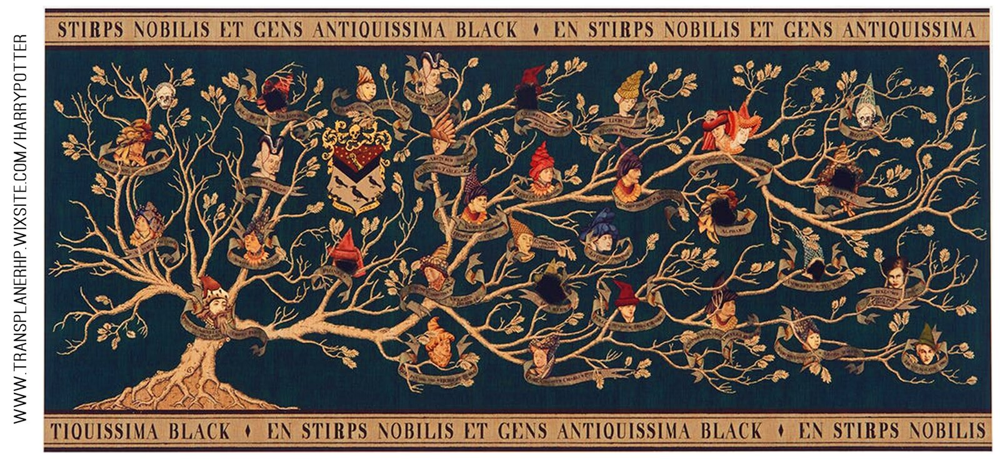
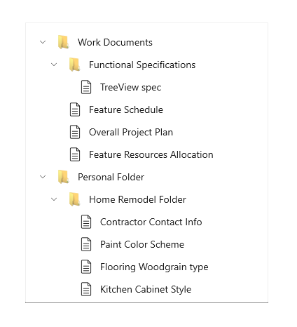
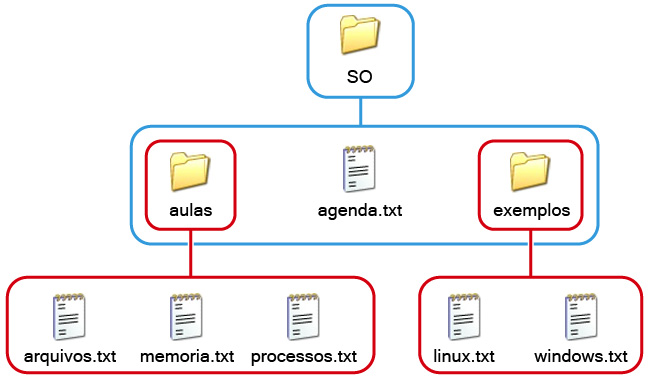
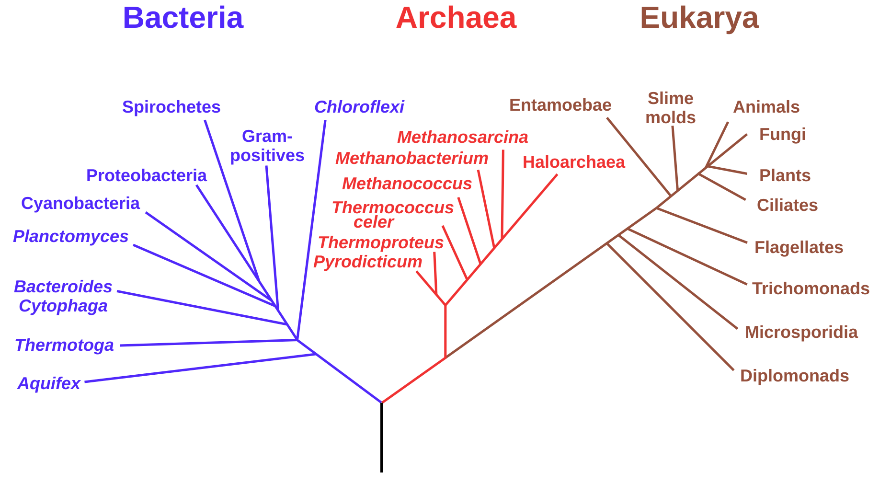
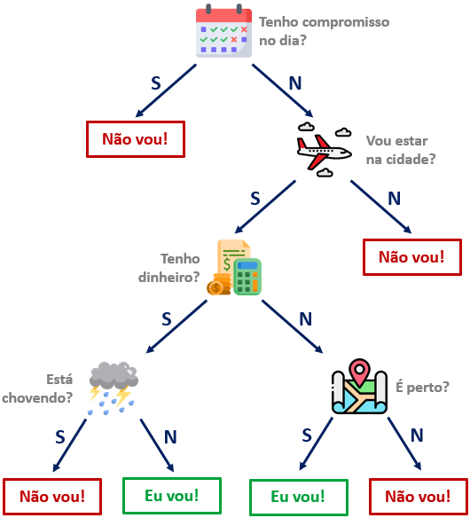

Aula 21 – Árvores Binárias e de Pesquisa
Universidade Federal do Rio Grande do Sul
Instituto de Informática
Departamento de Informática Teórica
Slides baseados no material da Profa. Leila Ribeiro.





🏆
Chaveamento de torneio
Eliminatórias de campeonatos esportivos.
🌳
Árvore filogenética
Evolução e relações entre espécies.
📁
Sistema de arquivos
Diretórios e subdiretórios no computador.
🧠
Árvore de decisão
Modelos de classificação e aprendizado.
🌳
Cada nó da árvore representa os dados de uma pessoa.
Cada pessoa tem um pai e uma mãe.
O pai e/ou a mãe podem não ser conhecidos.
🧬
Como representar esta informação?
O pai e a mãe também são Pessoa — o tipo se refere a si mesmo.
Acrescentamos uma variante ninguem para representar a ausência de informação.
Uma forma abstrata de descrever repetição em processos.
Ênfase em quebrar (decompor) o problema em problemas menores até que a solução seja trivial, e então montar a solução através da combinação das soluções menores.
Ideia básica
se o problema é trivial resolva-o diretamente
se o problema é difícil
subproblema 1 solução do subproblema 1
subproblema 2 solução do subproblema 2
combinar 1 e 2
Exemplos de problemas triviais: lista vazia, árvore vazia, número zero, caso base ninguem…
Construir uma função que, dada uma pessoa, verifica se ela ou algum de seus ancestrais tem/teve tipo sanguíneo “O”.
Passo 1
Nome da função
ancestral-tipo-o
Passo 2
Tipos
Entrada: Pessoa
Saída: Boolean
Passo 3
Implementação
Definir como a função gera o resultado…
Aplicamos a estratégia: trivial → resolver, difícil → decompor + resolver + combinar.
ancestral-tipo-o(GUSTAVO) = true
ancestral-tipo-o(FRED) = false
Dada uma pessoa p:
se p é ninguem devolver false
se p tem tipo sang. "O" devolver true
senão
mãe de p verificar tipo O nos ancestrais por parte de mãe
pai de p verificar tipo O nos ancestrais por parte de pai
1 OU 2
# Definições dos slides anteriores (necessárias para executar o exemplo)
data Pessoa:
| ninguem # caso base: pai/mãe desconhecido(a)
| pessoa(
nome :: String, # nome da pessoa
ano :: Number, # ano de nascimento
tipo-sang :: String, # tipo sanguíneo
pai :: Pessoa, # representa o pai da pessoa
mae :: Pessoa # representa a mãe da pessoa
)
end
CARLOS = pessoa("Carlos", 1926, "A", ninguem, ninguem)
BETINA = pessoa("Betina", 1927, "B", ninguem, ninguem)
EVA = pessoa("Eva", 1960, "O", CARLOS, BETINA)
FRED = pessoa("Fred", 1958, "A", ninguem, ninguem)
GUSTAVO = pessoa("Gustavo", 1988, "A", FRED, EVA)fun ancestral-tipo-o(p :: Pessoa) -> Boolean:
doc: ```Dada uma pessoa, verifica se esta pessoa ou algum ancestral
tem tipo sanguíneo O.```
cases (Pessoa) p:
# Se p é ninguém, retorna falso
| ninguem => false
| pessoa(nome, ano, tipo, pai, mae) =>
(tipo == "O") or # Se p é tipo O
ancestral-tipo-o(pai) or # ou existe ancestral por parte de pai tipo O
ancestral-tipo-o(mae) # ou existe ancestral por parte de mãe tipo O
end
where:
ancestral-tipo-o(GUSTAVO) is true
ancestral-tipo-o(FRED) is false
endEXERCÍCIO 1
Construa uma função que, dada uma pessoa, conta o número de ancestrais conhecidos.
Faça 2 versões:
Resolva em Pyret. Lembre: pense no caso trivial e no caso difícil.
🌲
profundidade = maior nível = 2
Nó Cada elemento da árvore.
Raiz Nó especial no topo.
Grau de um nó Número de filhos (sub-árvores).
Grau da árvore Maior grau entre todos os nós.
Folha Nó sem filhos.
Nível Distância do nó até a raiz.
Profundidade Maior nível da árvore.
Cada nó tem no máximo dois filhos: esquerda e direita.
EXERCÍCIO 2
Construa uma função que, dada uma árvore binária, retorna uma lista com os identificadores (ids) dos nós da árvore.
Resolva em Pyret. Lembre: pense no caso trivial e no caso difícil.
🔎
Uma ABP é uma AB que respeita a invariante:
ids da sub-árvore esquerda < id da raiz < ids da sub-árvore direita.
(a) Árvore Binária
(b) Árvore Binária de Pesquisa
invariante: ids da esq < raiz < ids da dir
Procurando o id = 15 nesta ABP:
3 visitas para encontrar 15, numa árvore com 7 nós. Em uma AB qualquer, no pior caso teríamos que visitar todos os 7.
Vamos construir uma ABP a partir de uma lista de pares (identificador, conteúdo).
Antes, precisamos definir o tipo de cada elemento da lista:
constroi-abp :: List<Par> -> ABP Dada uma lista de pares (id, conteúdo), constrói uma ABP.
Exemplos:
constroi-abp(empty) → vazia
Dada uma lista lp de pares:
se lp é vazia devolver a árvore vazia
se lp não é vazia
o resto de lp ABP construída com o resto de lp
inserir o primeiro elemento de lp na ABP 1
fun constroi-abp(lp :: List<Par>) -> ABP:
doc: "Constrói uma ABP a partir de uma lista de pares (id, conteúdo)."
cases (List) lp:
| empty => vazia # Se lista é vazia, retorna ABP vazia
| link(primeiro, resto) => # Se lista não é vazia
insere-no( # Insere um nó com,
primeiro.id, # ID do primeiro nó da lista
primeiro.cont, # Conteúdo do primeiro nó da lista
constroi-abp(resto)) # Na árvore com o resto dos pares de lp
end
where:
constroi-abp(empty) is vazia
endchamadas recursivas
constroi-abp([11, 20, 3, 15, 17, 10])insere 11 …insere 11 ✓constroi-abp([20, 3, 15, 17, 10])insere 20 …insere 20 ✓constroi-abp([3, 15, 17, 10])insere 3 …insere 3 ✓constroi-abp([15, 17, 10])insere 15 …insere 15 ✓constroi-abp([17, 10])insere 17 …insere 17 ✓constroi-abp([10])insere 10 …insere 10 ✓constroi-abp([])vaziaABP devolvida
Ainda não há ABP: cada chamada espera o resultado de constroi-abp(resto).
constroi-abp(L1). Os pares aparecem só pelo id.insere-no(10, "A", …): 10 vira a raiz.insere-no(17, "C", …): 17 > 10 → direita.insere-no(15, "D", …): 15 > 10 → direita; 15 < 17 → esquerda.insere-no(3, "B", …): 3 < 10 → esquerda.insere-no(20, "E", …): 20 > 10 → direita; 20 > 17 → direita.insere-no(11, "F", …): 11 > 10 → direita; 11 < 17 → esquerda; 11 < 15 → esquerda. Pronto: esta é a ABP devolvida por constroi-abp(L1).insere-no :: Number, String, ABP -> ABP
Insere um nó com id e conteúdo numa ABP, preservando a invariante.
Exemplo: inserir o nó (15, "D") nesta ABP →
Antes
→
Depois
Dados id, cont e abp:
se abp é vazia criar ABP com um único nó (id, cont)
se id > abp.id
sub-árvore direita: abp.dir inserir (id, cont) em abp.dir
no(abp.id, abp.conteudo, abp.esq, 1)
se id < abp.id
sub-árvore esquerda: abp.esq inserir (id, cont) em abp.esq
no(abp.id, abp.conteudo, 1, abp.dir)
# Definições dos slides anteriores (necessárias para executar o exemplo)
data ABP:
| vazia
| no(
id :: Number,
conteudo :: String,
esq :: ABP, # contém apenas nós com identificadores menores que id
dir :: ABP # contém apenas nós com identificadores maiores que id
)
end
data Par:
| par(id :: Number, cont :: String)
end
L1 = [list: par(11, "F"), par(20, "E"), par(3, "B"), par(15, "D"), par(17, "C"), par(10, "A")]fun insere-no(id :: Number, c :: String, abp :: ABP) -> ABP:
doc: ```Dado um id, um conteúdo e uma ABP, insere um novo nó na ABP.
Assume que não existe o ID na árvore previamente.```
cases (ABP) abp:
| vazia => no(id, c, vazia, vazia) # Se ABP vazia, constrói ABP com um nó
| no(r-id, r-c, esq, dir) =>
ask:
| id > r-id then:
no(r-id, r-c, # ABP construída inserindo o nó na subárvore direita
esq, # subárvore esquerda
insere-no(id, c, dir)) # nova subárvore direita da ABP
| id < r-id then:
no(r-id, r-c, # ABP construída inserindo o nó na subárvore esquerda
insere-no(id, c, esq), # nova subárvore esquerda da ABP
dir) # subárvore direita
end
end
end# Do slide "constroi-abp": experimente constroi-abp(L1) no painel de interações
fun constroi-abp(lp :: List<Par>) -> ABP:
doc: "Constrói uma ABP a partir de uma lista de pares (id, conteúdo)."
cases (List) lp:
| empty => vazia
| link(primeiro, resto) =>
insere-no(primeiro.id, primeiro.cont, constroi-abp(resto))
end
where:
constroi-abp(empty) is vazia
endEXERCÍCIO 3
Desenvolva uma função que, dados um identificador e uma ABP, retorna o conteúdo associado a este id na árvore.
Se não houver nó com este id, retorna “Nó não encontrado”.
Resolva em Pyret. Lembre: pense no caso trivial e no caso difícil.
?